User manual - Probabilistic analyses¶
In order to perform probabilistic analysis, build first a probabilistic model.
1- Probabilistic model¶
1-1 Definition¶
- A new probabilistic model can be created through:
the Probabilistic model item in the context menu of the relevant model in the study tree

the Probabilistic model definition box of the model diagram
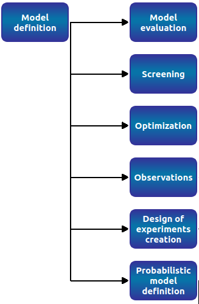
A physical model contains only one probabilistic model.
At the creation of a probabilistic model, a new item named Probabilistic model is added in the study tree below the physical model item.
- Its context menu contains the following actions:
Design of experiments: Create a new design of experiments
Limit state: Create a new limit state
Central tendency: Create a new central tendency analysis
Sensitivity: Create a new sensitivity analysis
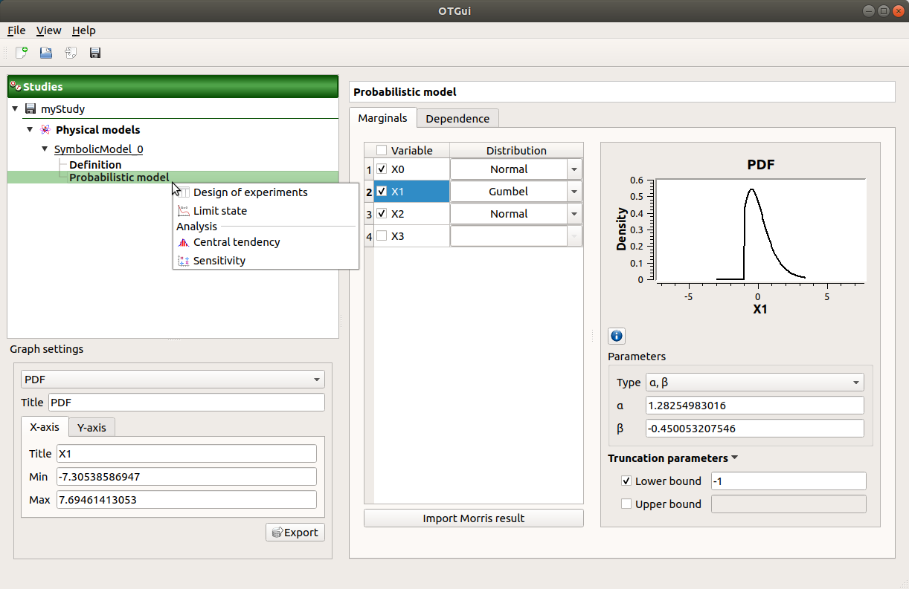
This item is associated with a window which has the Marginals and Dependence tabs.
1-2 Specify the distribution parameters¶
The Marginals tab allows one to set up the input distributions.
- On the left, the user can choose stochastic input variables and their distribution.
Variables are deterministic by default: To make a variable stochastic, check the variable box.
Variable distribution is Gaussian distribution by default. To change the distribution, select one among the proposed distributions in the combo box of the Distribution column.
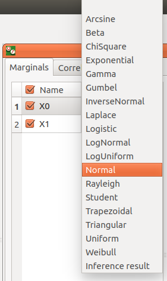
- On the right, the user can display and set up different parameters.
- For a deterministic input:
display the input value, defined in the physical model
- For a stochastic input:
- display the input distribution PDF
Use the Graph settings window to set up graphical parameters and select the graphic type: PDF (default) or CDF
- Graph interactivity:
Left-click to translate the graph
Mouse wheel up/down to zoom in/zoom out
- set up its distribution parameters:
click on the icon to see the parameters definition
Use floating points or integers, with respect to the distribution support to set up the parameters (If a value is not valid: the previous value is used and an error message appears at the bottom of the window)
Check off Lower bound and/or Upper bound and set the bounds value to truncate the distribution
with the Type combo box, select the suitable set of parameters to configure the distributions: LogNormal, Weibull and Gumbel
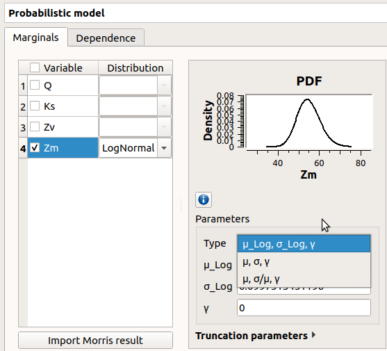
Among the proposed distributions, the user can find the Inference result item: If at least one inference analysis result exists in a current study, clicking on the Inference result item will display the following window:
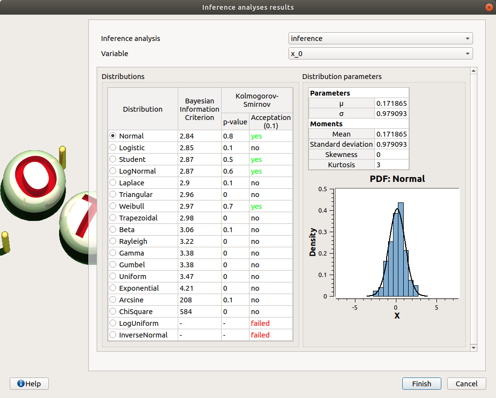
Here the user can generate the inferred distribution for a variable of interest, from an existing inference analysis:
Choose an analysis result (Inference analysis combo box)
Select the result for a variable (Variable combo box)
Choose the best inferred distribution from the current distribution parameters:
On the right, the Distribution parameters table shows the parameters of the current distribution. On the left, choose among the proposed distributions, the one fitting the best the current distribution (Distributions table). The BIC, p-value and the Acceptation columns give indications on the distributions for which the inference analysis worked well (high p-value, yes status) or not (low p-value, no/failed status). The distributions whose inference analysis failed are given for information: it is not possible to select them and validate the window.
1-3 Specify dependence between variables¶
The Dependence tab allows one to set up dependence between variables. It is represented by copulas.
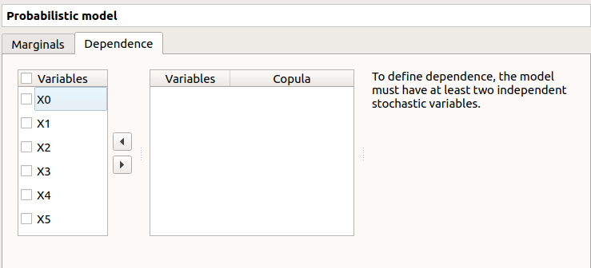
On the left, all the stochastic input variables are listed. By default no dependence is set between these variables. To add dependence between variables, select at least two variables on the left list and click on the right arrow:
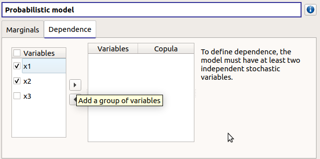
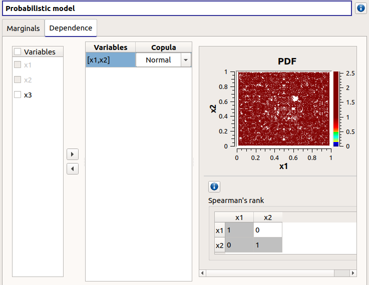
On the left list, the selected variables become disabled: thus, variables can only belong to one group at a time.
In the middle, the selected variables appear, with their corresponding copula. By default, variables are independent: their default copula is the Normal copula, defined as a Spearman correlation matrix equal to the identity matrix (symmetry handled automatically). To change the copula type, select one in the combo box of the Copula column (Normal and Bivariate copulas are available).
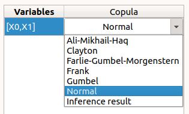
On the right, the user can set up the copula parameters and display the distribution. The copula parameters are accessible by clicking on the icon .
Normal copula: the matrix values can be changed by clicking on the upper triangular part of the matrix (expected: floating points or integers in the
interval). The matrix must be definite positive: If a value is not valid, an error message appears below and the previous value is kept.
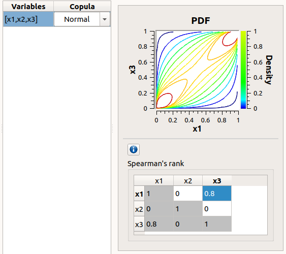
Bivariate copula: only one parameter is defined (expected: floating points or integers)
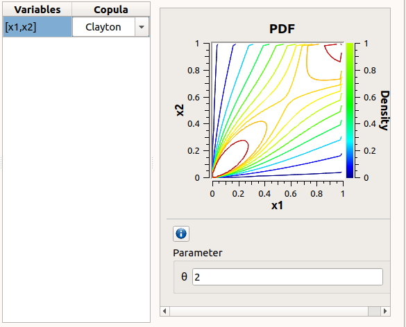
Use the Graph settings window to set up graphical parameters and select the graphic type: PDF (default) or CDF
- Graph interactivity:
Left-click to translate the graph
Mouse wheel up/down to zoom in/zoom out
To remove an existing dependence, select the variables of interest in the middle table and click on the left arrow: the variables appear enabled again in the first table.
Among the proposed copulas, the user can find the Inference result item: If at least one inference analysis result exists in a current study, clicking on the Inference result item will display the following window:
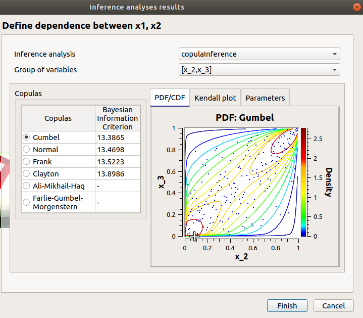
- Here the user can generate the inferred distribution, from an existing inference analysis:
Choose an analysis result (Inference analysis combo box)
Select the result for a group of variables (Group of variables combo box)
The table below shows the list of copulas. The Bayesian Information Criterion is provided to inform about how well the inference analysis performed: if it failed (indicated by -), the copula is kept listed for information but it is not possible to validate the window. Select a copula among the list: the current copula PDF, Kendall plot and parameters appear on the right.
2- Limit state¶
To perform a reliability analysis, define first a limit state (possible only if the model contains stochastic input variables).
- A new limit state can be created through:
the context menu of the probabilistic model item
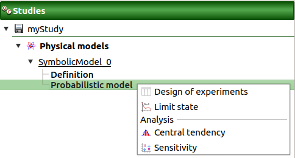
the Limit state definition box of the model diagram
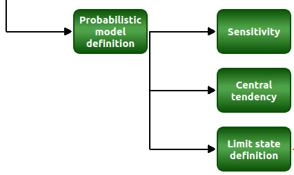
the context menu of the Reliability item (if it already exists)
When a limit state is required, a new element is added in the study tree below Reliability.
- Its context menu contains the following actions:
Rename: Rename the limit state
Threshold exceedance: Create a new threshold exceedance analysis
Remove: Remove the limit state and all the analyses depending on it
- This item is associated with a window which allows one to:
Select the output of interest
- Define the failure event by:
- selecting an operator:
<= (less or equal)
>= (greater or equal)
> (greater than)
< (less than)
setting up the threshold defining the failure domain (default: 0., expected: floating points or integers)
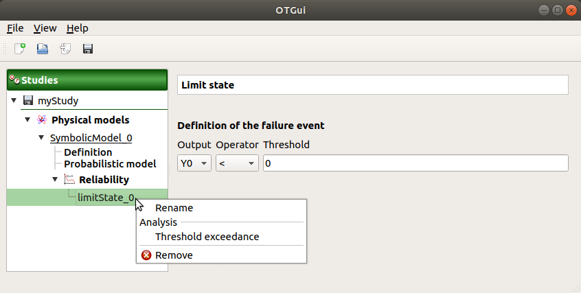
3- Threshold exceedance analysis¶
- The user can require a computation of the probability of failure relative to the limit state through:
the context menu of the relevant limit state
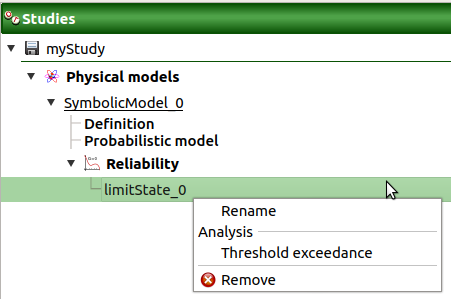
the Reliability box of the model diagram
3-1 Definition¶
When an analysis is required, the following window appears to define its parameters.
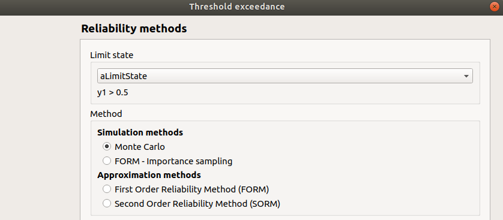
- First, select a method:
- the simulation methods are:
FORM - Importance sampling: the FORM algorithm starts from the result of the Importance sampling analysis
Then, set up the algorithm parameters of the corresponding method:
3-1-1 Simulation methods¶
- The Simulation methods window allows one to define:
- Stopping criteria of the algorithm (Select at least one criterion to validate the window):
the maximum coefficient of variation for the probability, (default: 0.01, expected: a floating point or an integer, in the interval
![\left[0;1 \right]]() )
)the maximum computation time in days(d), hours(h), minutes(m) or seconds(s) (default: one minute)
the maximum sampling size (default: 10000)
- Evaluation parameter:
the block size (default=1): defines the maximum number of samples queued for evaluation by the physical model, see design of experiment evaluation for more details
Advanced Parameters (default: hidden): the seed of the random generator (default: 0, positive integer expected)
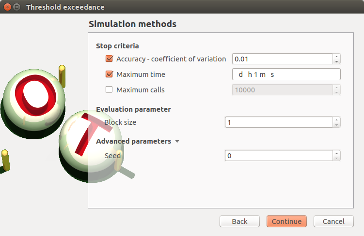
3-1-2 Approximation methods¶
- The window allows one to define Optimization parameters:
the algorithm method: Abdo-Rackwitz, Cobyla (default), SQP
the starting point (default: means of the distributions of the stochastic inputs)
- Advanced Parameters (default: hidden): the stopping criteria
the maximum number of iterations (default: 100, positive integer expected)
the errors: absolute, relative, residual and constraint errors (default: 1e-5, positive float expected)
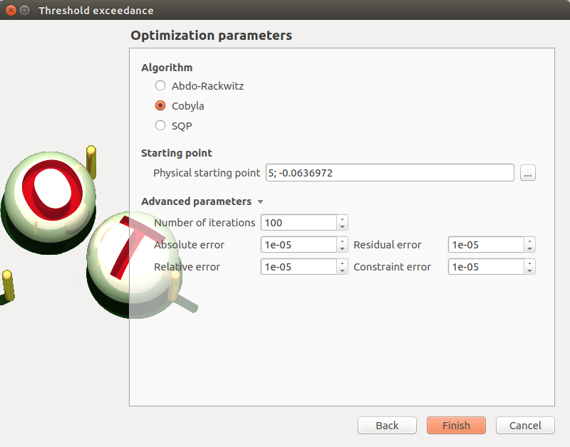
3-2 Launch¶
When the window is validated, a new element appears in the study tree below the relevant limit state item in the Reliability section.
- Its context menu has the following actions:
Rename: Rename the analysis
Modify: Reopen the setting window to change the analysis parameters
Remove: Remove the analysis from the study
This item is associated with a window showing the parameter list, a progress bar and Run/Stop buttons, to launch or stop the analysis.
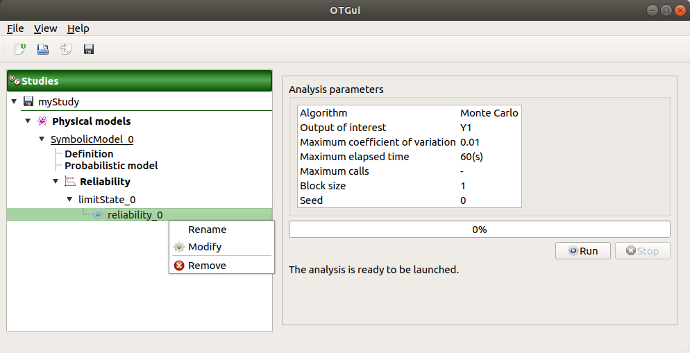
3-3 Results¶
When the analysis is finished or stopped, a new result window appears which content depends on the chosen algorithm.
3-3-1 Monte Carlo¶
On the left, the Output section recalls the analysed output.
The results window gathers several tabs:
- The Summary tab shows:
the elapsed computation time
the number of performed simulations (i.e. calls to the model)
the failure probability estimate, its coefficient of variation and the corresponding confidence interval at 95%
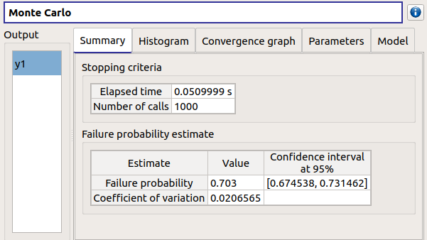
The Histogram tab presents the histogram of the output sample. The red vertical line represents the threshold of the failure event.
Use the Graph settings window to set up graphical parameters.
- Graph interactivity:
Left-click to translate the graph
Mouse wheel up/down to zoom in/zoom out
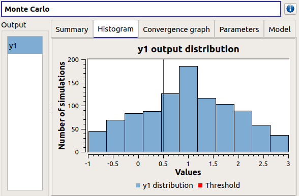
- The Convergence graph tab presents the convergence of the probability estimate.
Use the Graph settings window to set up graphical parameters.
- Graph interactivity:
Left-click to translate the graph
Mouse wheel up/down to zoom in/zoom out
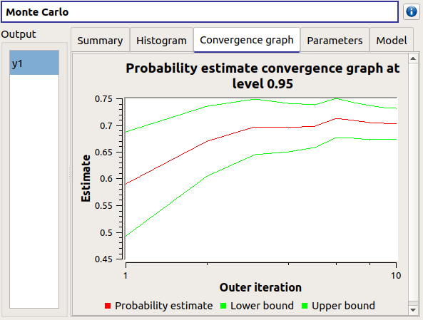
The Parameters tab reminds the user of all the parameters values to perform the analysis.
3-3-2 FORM¶
On the left, the Output section recalls the analysed output.
The results window gathers several tabs:
- The Summary tab shows:
the failure probability and the Hasofer reliability index
- the optimization stopping criteria value:
the number of iterations
the errors: absolute, relative, residual and constraint errors
the number of calls of the model
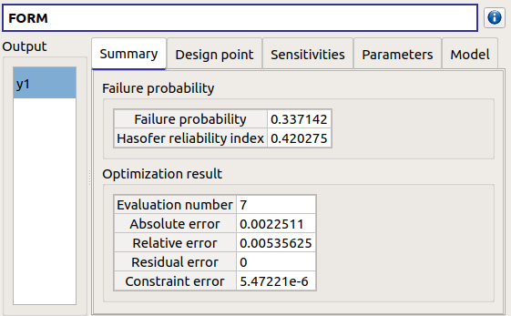
- The Design point tab gathers:
the coordinates of the design point in the standard space and in the physical space
the importance factors of each variable
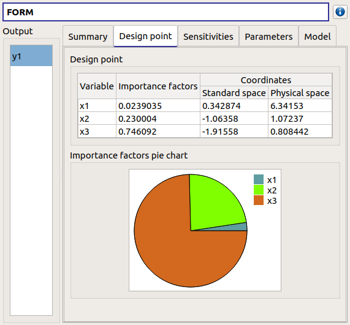
The Sensitivities tab gathers the sensitivities of the failure probability and the reliability index to the parameters of the probabilistic input vector (marginals and dependence structure).
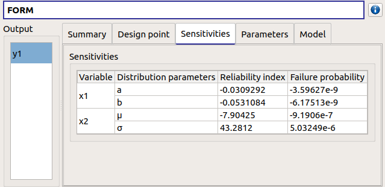
The Parameters tab reminds the user of all the parameters values to perform the analysis.
The Model tab shows the model content and the limit state used to perform the analysis.
3-3-3 SORM¶
The SORM result window presents a similar tab organization to the FORM window, with additional three other methods to compute failure probability and reliability index: Breitung, Hohenbichler and Tvedt (Summary tab).
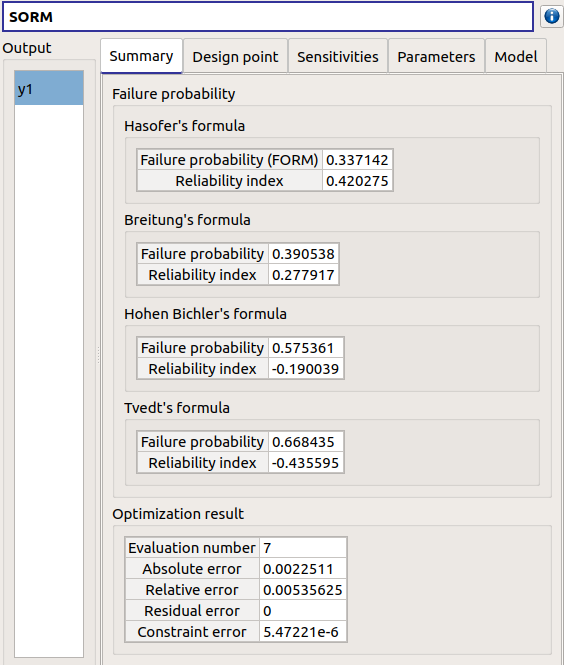
3-3-4 FORM-IS¶
The FORM-IS result window contains the same tabs as the Monte Carlo result window and a FORM results tab to display the tabs of a FORM result window.
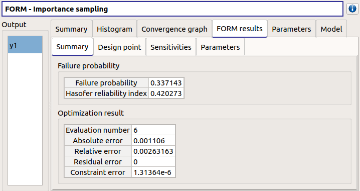
4- Central tendency analysis¶
- A new central tendency analysis can be created in 3 different ways:
the context menu of the probabilistic model item
the Central tendency box of the model diagram
the context menu of the Central tendency item (if it already exists)
4-1 Definition¶
- When an analysis is required, a window appears, in order to set up:
the outputs of interest (Select outputs - default: all outputs are analyzed)
the method: Monte Carlo sampling (default) or Taylor Expansions (second order)
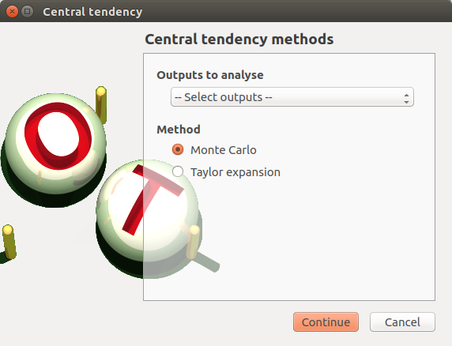
4-1-1 Monte Carlo¶
- The Monte Carlo parameters window allows one to define:
- Stopping criteria of the algorithm (Select at least one criterion to validate the window):
the maximum coefficient of variation (CV) for the mean (
![CV = \frac{\sigma / \sqrt{n}}{\lvert \mu \rvert}]() with
with ![n]() : the number of simulations,
: the number of simulations,
![\mu]() : the mean,
: the mean, ![\sigma]() : the standard deviation), (default: 0.01,
expected: a floating point or an integer, in the interval )
: the standard deviation), (default: 0.01,
expected: a floating point or an integer, in the interval )the maximum confidence interval length (
![CIL = 2 \times \frac{\sigma}{\sqrt{n}} \times Q_{Normal} \left( \frac{1+IC_{level}}{2} \right)]() with : the number of simulations and
with : the number of simulations and ![Q_{Normal}]() the quantile of the normal distribution,
the level can be set in Advanced Parameters)
the quantile of the normal distribution,
the level can be set in Advanced Parameters)the maximum computation time in days(d), hours(h), minutes(m) or seconds(s) (default: one minute)
the maximum sampling size (default: 10000, expected: integer)
- Evaluation parameter:
the block size (default=1): defines the maximum number of samples queued for evaluation by the physical model, see deterministic design of experiment evaluation for more details
- Advanced Parameters (default: hidden):
the seed of the random generator (default: 0, positive integer expected)
require the computation of the confidence interval (default: checked) at a given level (default: 0.95, expected: floating point or integer, in the interval
![\left[0;1 \right[]() )
)
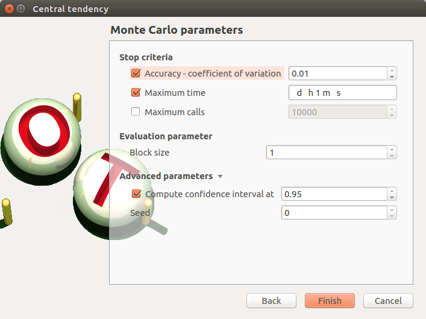
4-1-2 Taylor expansions¶
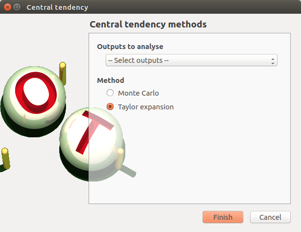
4-2 Launch¶
When the window is validated, a new element appears in the study tree below Central tendency.
- Its context menu has the following actions:
Rename: Rename the analysis
Modify: Reopen the setting window to change the analysis parameters
Remove: Remove the analysis from the study
This item is associated with a window showing the parameter list, a progress bar and Run/Stop buttons, to launch or stop the analysis.
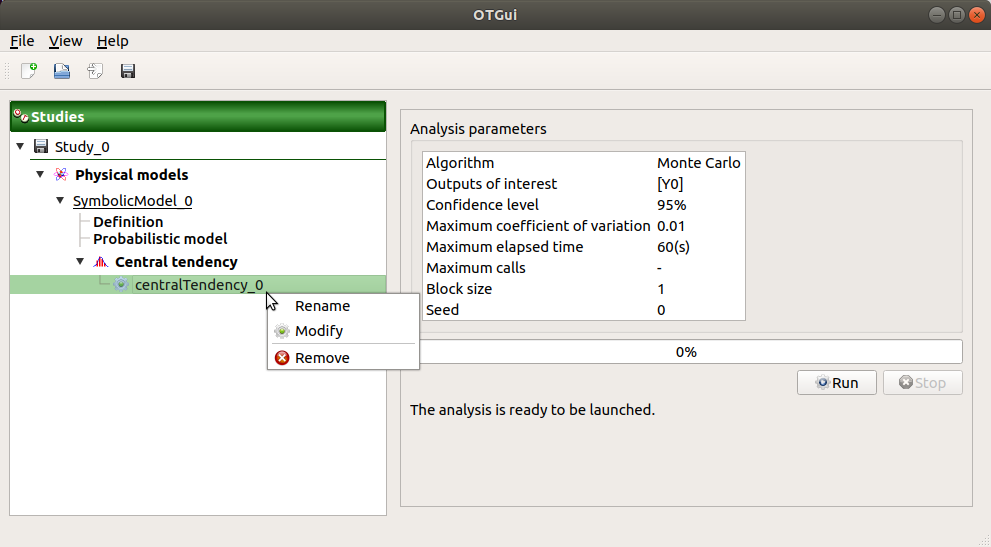
4-3 Results¶
When the analysis is finished or stopped, a result window appears.
4-3-1 Monte Carlo¶
The Monte Carlo result window shows numerous tabs, some of which are interactively linked (Table, Parallel coordinates plot, Plot matrix and Scatter plot tabs): when the user selects points on one of these representations, the same points are automatically selected in the other tabs.
The results window gathers the following tabs:
The Summary tab summarizes the results of the analysis, for a selected variable (left column): the stopping criteria, moment estimates, empirical quantiles, minimum/maximum values, input values at extremum.
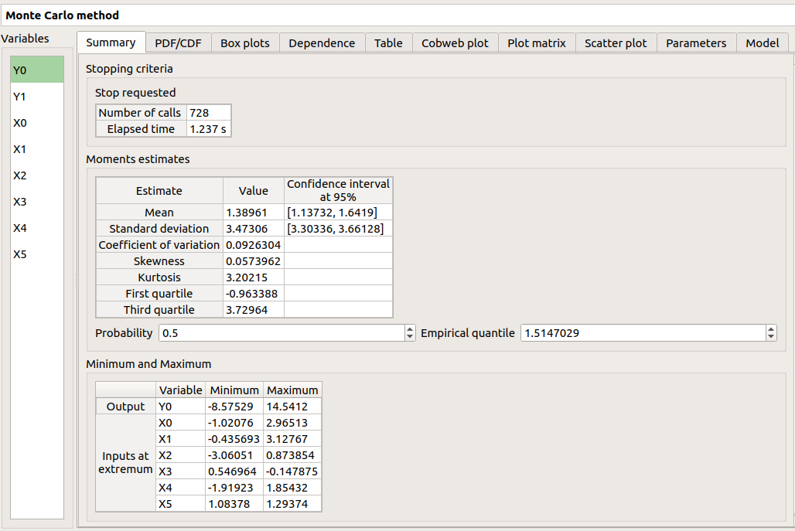
The PDF/CDF tab presents the PDF/CDF of the variables together with a kernel smoothing representation.
Use the Graph settings window to set up graphical parameters and select the graphic type: PDF (default) or CDF
- Graph interactivity:
Left-click to translate the graph
Mouse wheel up/down to zoom in/zoom out
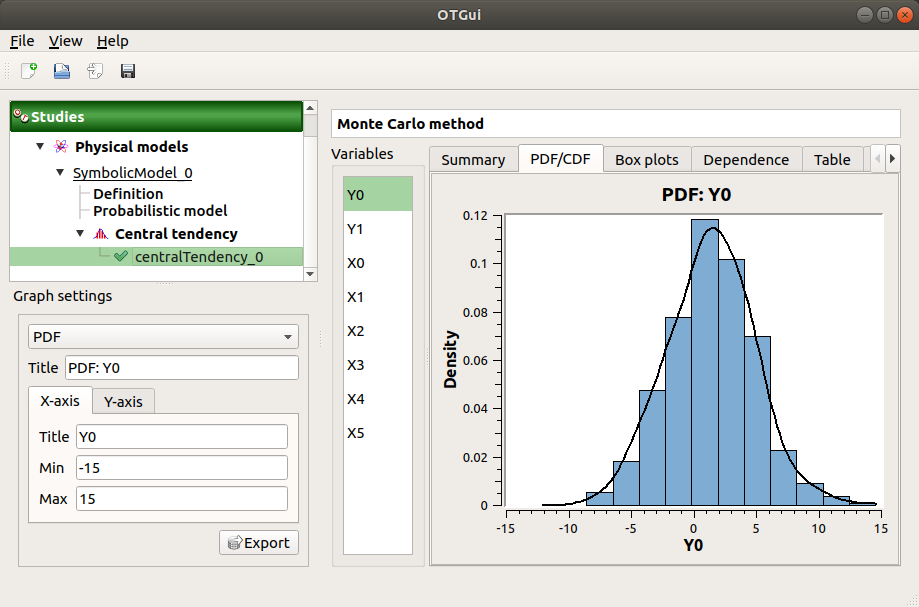
The Box plots tab presents the box plot of the variables. They are rescaled for each variable (
![x]() ), using mean () and standard deviation ():
), using mean () and standard deviation (): ![y = (x - \mu)/\sigma]()
Use the Graph settings window to set up graphical parameters.
- Graph interactivity:
Mouse wheel up/down to zoom in/zoom out
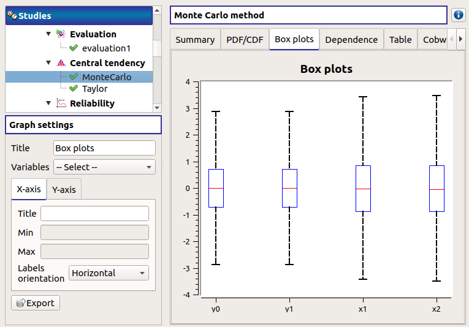
The Dependence tab displays the Spearman’s matrix estimate.
The cells are colored according to the value of the Spearman’s coefficient.
Its context menu allows one to export the table in a CSV file or as a PNG image.
Select cells and Press Ctrl+C to copy values in the clipboard
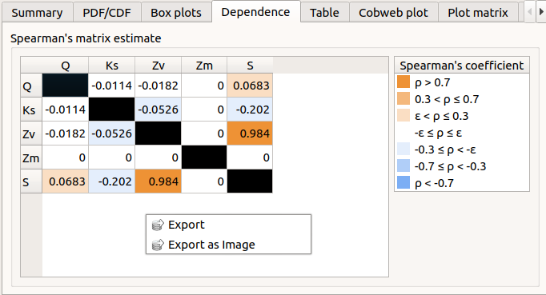
The Table tab presents the sample generated by the Monte Carlo sampling method and the resulting output values. The table can be exported (Export button).
- Table interactivity:
Left-click (optional: + Ctrl) on lines to select them
Left-click on column header to sort values in ascending or descending order
Left-click on a column header and drag it in another place to change columns order

The Parallel coordinates plot tab displays all the points generated by the analysis.
Use the Graph settings window to set up graphical parameters.
- Graph interactivity:
Left-click on columns to select curves (multiple selection possible)
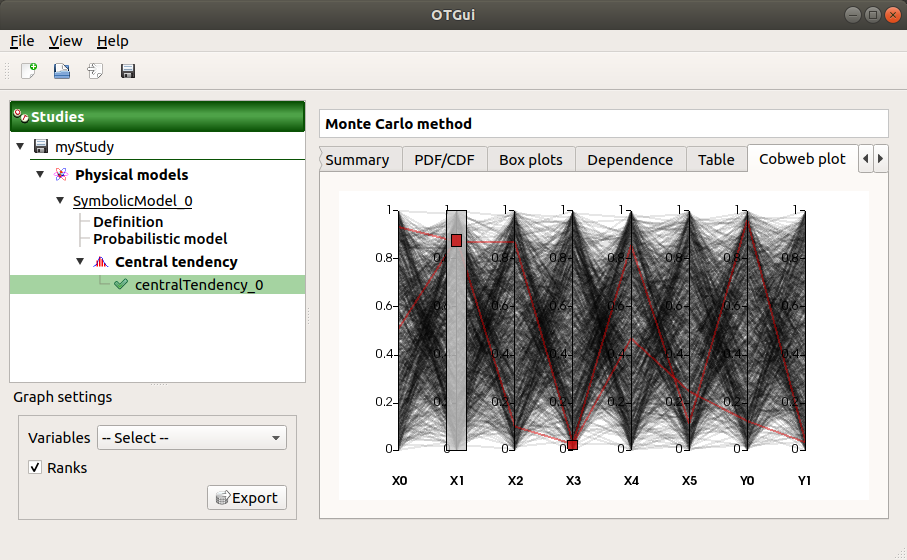
The Plot matrix tab: histograms of the distribution of each variable (diagonal) and scatter plots between each couple of input/output variables (off-diagonal).
Use the Graph settings window to set up graphical parameters.
- Graph interactivity:
Right-click to select points
Left-click to translate the graph
Mouse wheel up/down to zoom in/zoom out
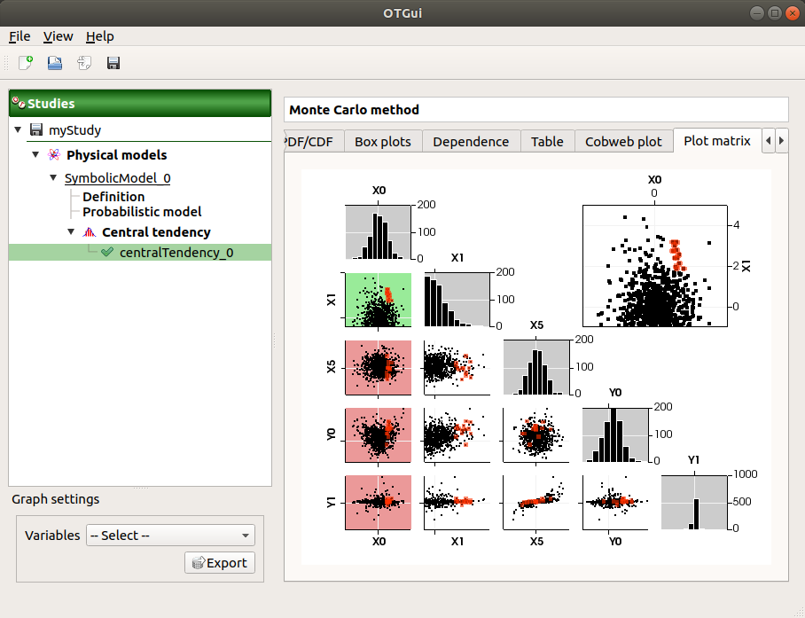
The Scatter plots tab displays the scatter plot of two parameters.
Use the Graph settings window to set up graphical parameters and select the variables to plot on X-axis and Y-axis (default: first output versus first input)
- Graph interactivity:
Right-click to select points
Left-click to translate the graph
Mouse wheel up/down to zoom in/zoom out
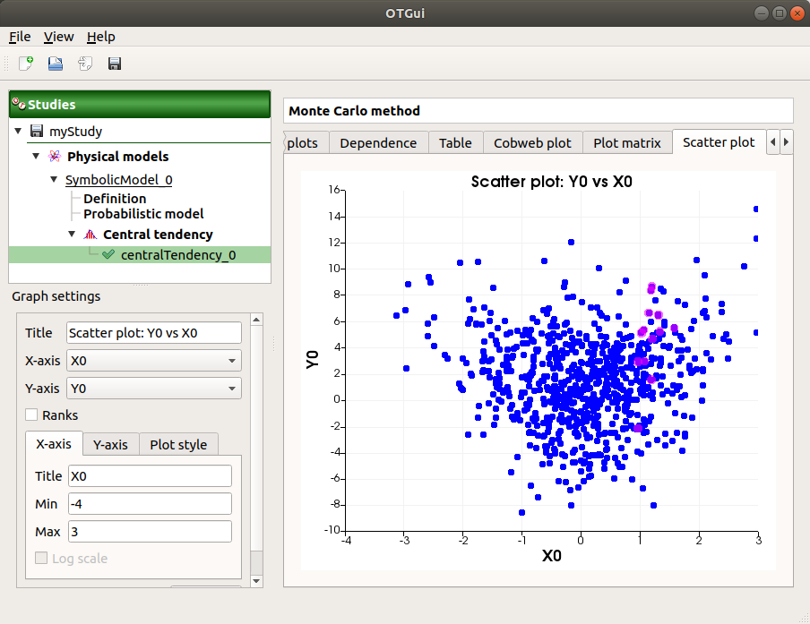
The Parameters tab reminds the user of all the parameters values to perform the analysis.
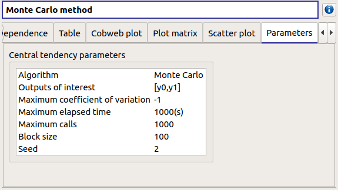
The Model tab shows the model content used to perform the analysis.
4-3-2 Taylor expansions¶
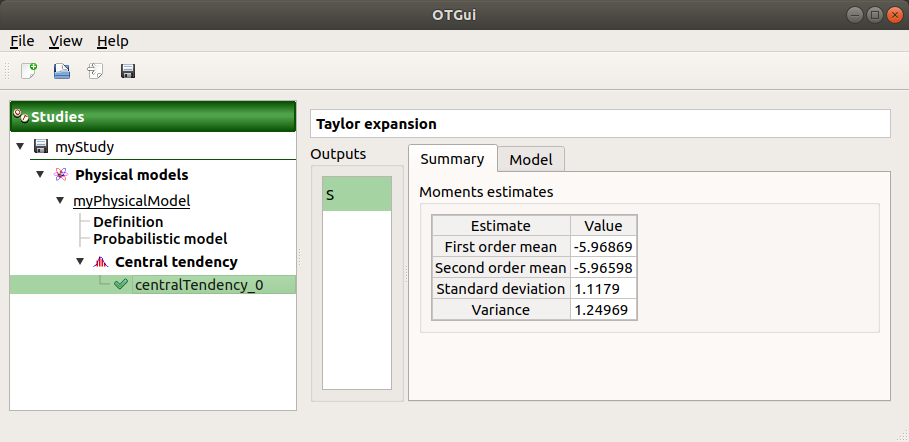
The results window gathers, for a selected output (left column): mean (corresponding to the first and second order expansions), standard deviation and variance.
5- Sensitivity analysis¶
- To create a new sensitivity analysis, 3 different ways are possible:
the context menu of the probabilistic model item
the Sensitivity box of the model diagram
the context menu of the Sensitivity item (if it already exists)
The input variables must be independent to perform a sensitivity analysis.
5-1 Definition¶
- When an analysis is required, a window appears, in order to set up:
the outputs of interest (Select outputs - default: all outputs are analyzed)
the method: Sobol (default), SRC (= Standardised Regression Coefficient)
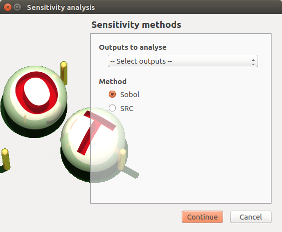
5-1-1 Sobol indices¶
- The Sobol parameters window allows one to define:
- Stopping criteria of the algorithm (Select at least one criterion to validate the window):
the maximum confidence interval length of the first order indices (default: 0.01, expected: a floating point or an integer, in the interval
)the maximum computation time in days(d), hours(h), minutes(m) or seconds(s) (default: one minute)
the maximum calls (default=10000)
- Evaluation parameters:
- the replication size (default=1000).
The label Number of calls by iteration is updated according to its value.
- At each iteration of the algorithm, the model is evaluated nbEval times:
![nbEval = (nbInputs + 2) * replicationSize]() with nbInputs, the number of stochastic input variables
with nbInputs, the number of stochastic input variables
The maximum calls must be greater than nbEval
the block size (default=1): defines the maximum number of samples queued for evaluation by the physical model, see deterministic design of experiment evaluation for more details
- Advanced Parameters (default: hidden):
the confidence level (default: 0.95; float expected).
the seed of the random generator (default: 0, positive integer expected)
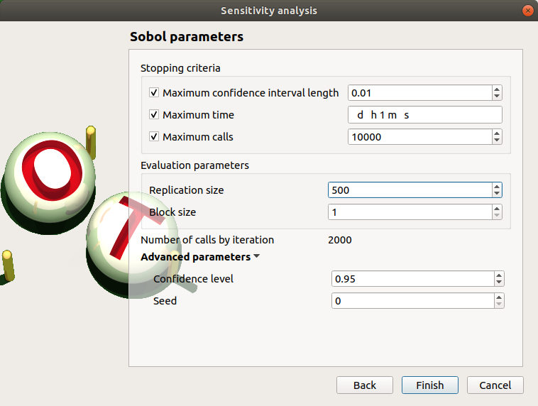
See the Sensitivity section in the example guide.
5-1-2 SRC indices¶
- The SRC parameters window allows one to define:
- Evaluation parameters:
the sample size (default=10000)
the block size (default=1): defines the maximum number of samples queued for evaluation by the physical model, see deterministic design of experiment evaluation for more details
Advanced Parameters (default: hidden): the seed of the random generator (default: 0, positive integer expected)
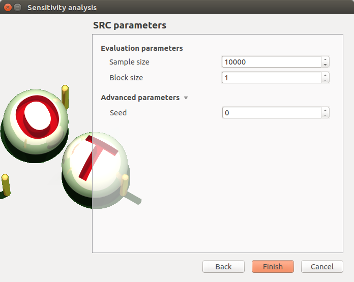
5-2 Launch¶
When the window is validated, a new element appears in the study tree below Sensitivity.
- Its context menu has the following actions:
Rename: Rename the analysis
Modify: Reopen the setting window to change the analysis parameters
Remove: Remove the analysis from the study
This item is associated with a window showing the parameter list, a progress bar and Run/Stop buttons, to launch or stop the analysis.
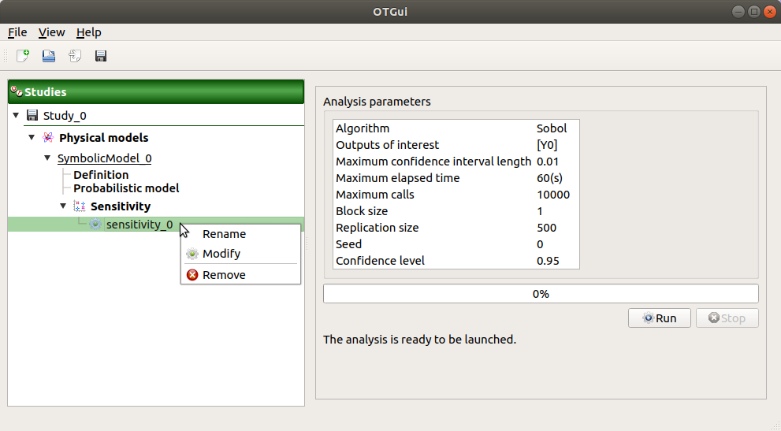
5-3 Results¶
When the analysis is finished or stopped, a result window appears.
5-3-1 Sobol indices¶
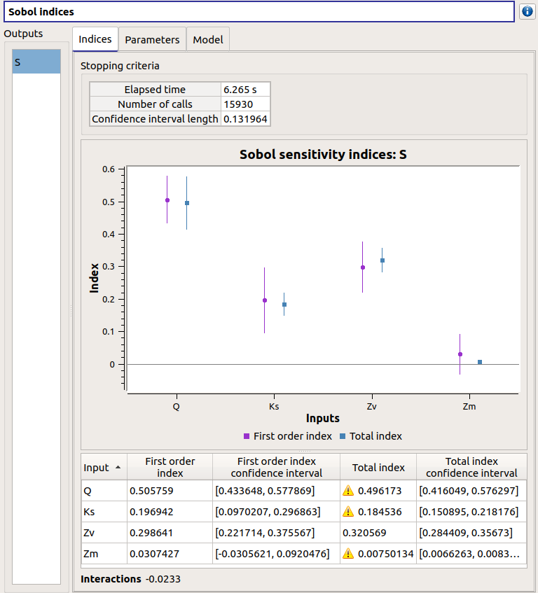
The window presents the following tabs:
The Indices tab includes, for a selected output (left column):
The values of the stopping criteria
The graphic representation of the first and total order indices and their confidence intervals, for each variable. Use the Graph settings window to set up graphical parameters.
A summary table with the first and total order indices and their confidence intervals.
- Table interactivity:
Select cells and Press Ctrl+C to copy values in the clipboard
Left-click on column header to sort values in ascending or descending order. Sorting the table will automatically sort the indices on the graph.
The index corresponding to the interactions (below the table).
If the Sobol’s indices estimates are incoherent, an
 will appear in the table.
It is advised to refer to the associated warning message (tooltip of the ).
will appear in the table.
It is advised to refer to the associated warning message (tooltip of the ).If input variables are correlated in the physical model of the analysis, a message will appear at the bottom of the window to warn the user the result can be false.
The Parameters tab reminds the user of all the parameters values to perform the analysis.
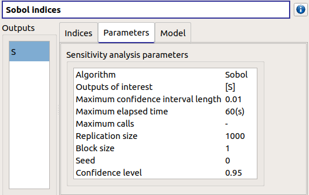
The Model tab shows the model content used to perform the analysis.
5-3-2 SRC indices¶
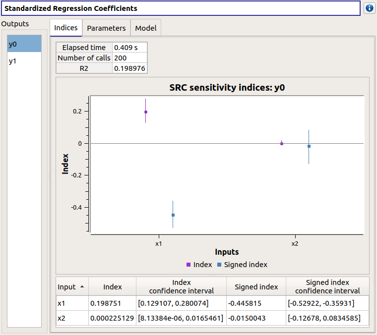
The results window gathers these tabs:
The Indices tab includes, for a selected output (left column):
the graph of the input variables SRC indices. Use the Graph settings window to set up graphical parameters.
the table of the input variables SRC indices.
- Table interactivity:
Select cells and Press Ctrl+C to copy values in the clipboard
Left-click on column header to sort values in ascending or descending order. Sorting the table will automatically sort the indices on the graph.
If input variables are correlated in the physical model of the analysis, a message will appear at the bottom of the window to warn the user the result can be false.
The Parameters tab reminds the user of all the parameters values to perform the analysis.
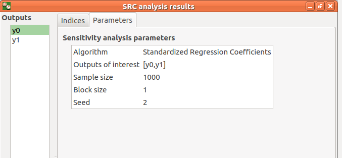
The Model tab shows the model content used to perform the analysis.